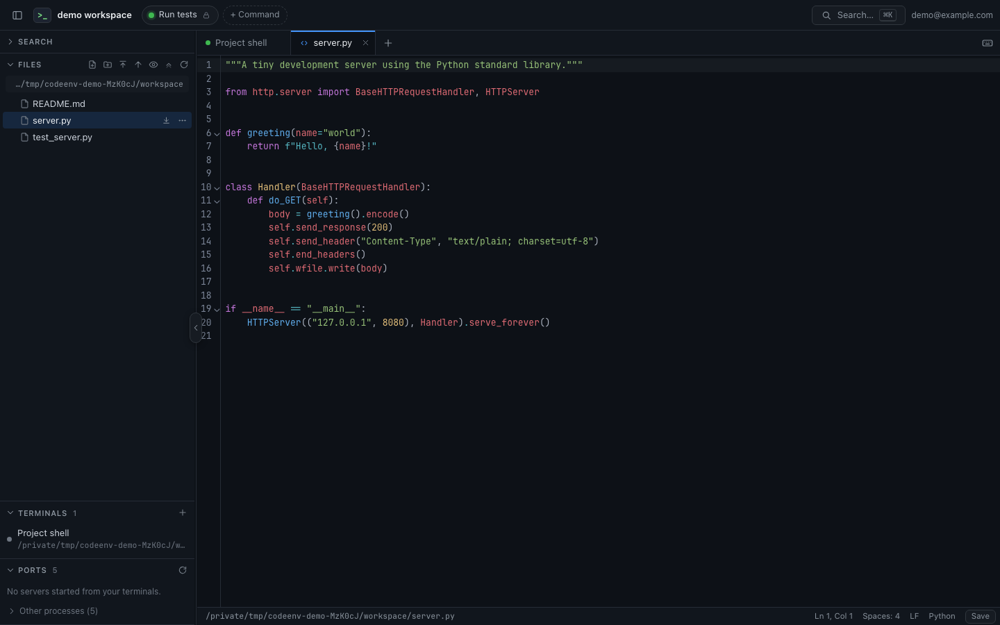

Leave. Come back. Keep going.
Shells survive browser disconnects and web server restarts. Reconnect to the screen and scrollback you left behind.
Self-hosted · Open source · MIT
Open a terminal, edit a file, check your app. Keep your work on your own server and pick it up from any browser.
Linux AMD64 & ARM64 · macOS Apple Silicon

A small workspace, close at hand
codeenv brings the everyday parts of remote development together. Your usual shell and commands stay in charge.
The recording starts in a terminal in a sample project. A shell command lists the project files. The editor opens server.py, adds a comment, and saves it. Content search finds the greeting in the project. The recording ends back in the terminal. The video has no audio.
Shells survive browser disconnects and web server restarts. Reconnect to the screen and scrollback you left behind.
Browse files, search the project, and save with conflict detection. Upload a folder or download it as a ZIP.
Forward a local development port through its own subdomain. WebSockets work too, including live reload.
Your machine does the work
The interface ships with the binary. A separate terminal daemon keeps your shells alive while the web server restarts.
For remote access, Cloudflare Tunnel connects your server and Cloudflare Access handles sign-in.
Start small
Download an archive for your machine, extract it, and open a terminal in the extracted directory. Or build from source with cargo build --release and use ./target/release/codeenv below.
cat > dev.toml <<'CONFIG'
listen = "127.0.0.1:7690"
root = "."
[auth]
mode = "insecure"
user = "dev@example.com"
CONFIG
./codeenv -c dev.tomlThen open localhost:7690.
Made to be understood
Small, focused contributions are welcome: a bug fix, a clearer guide, a better everyday interaction.